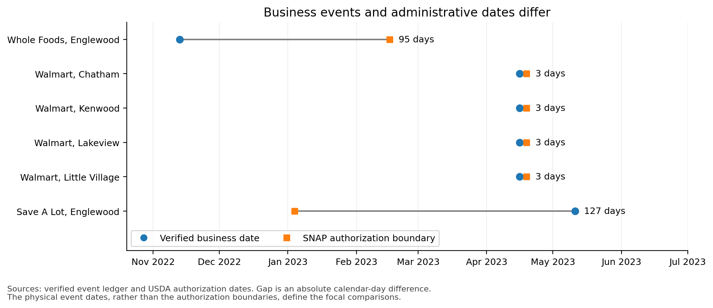
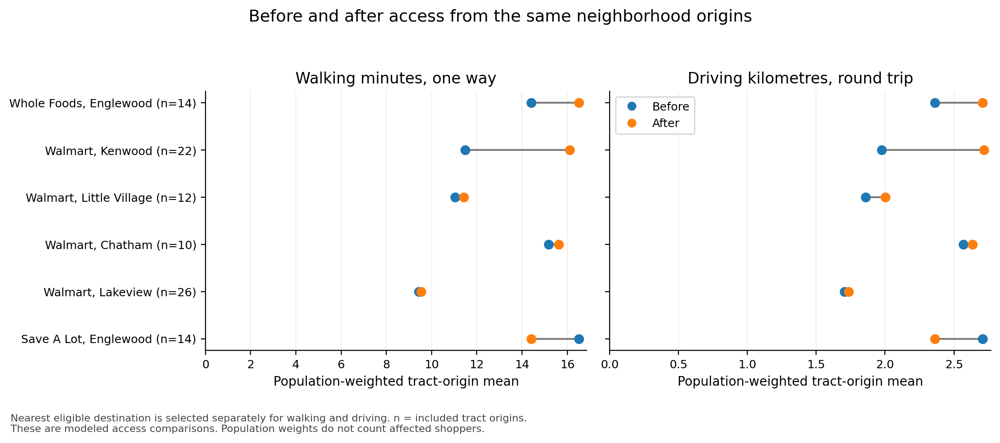
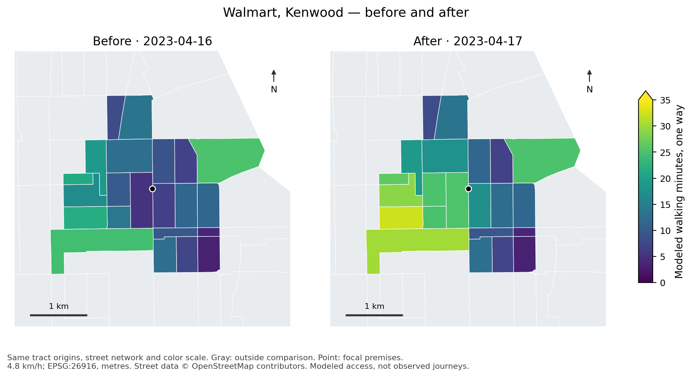
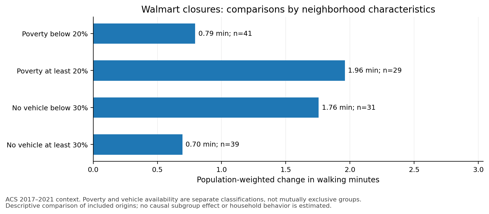
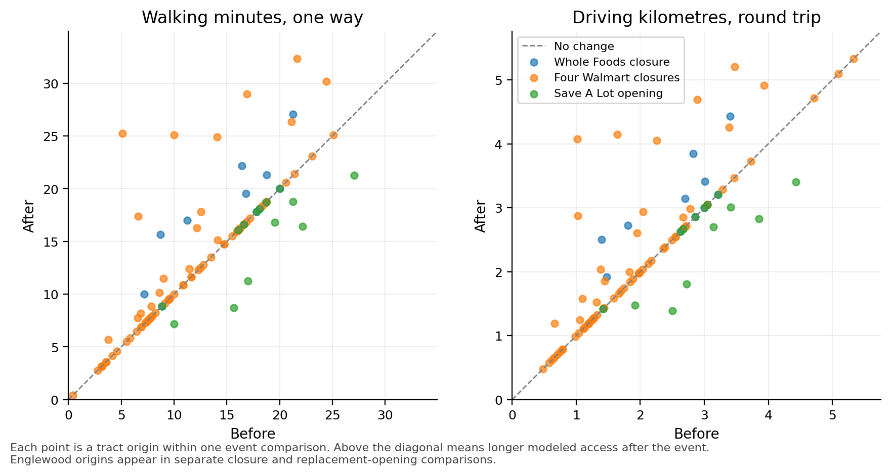

Grocery closures and neighborhood access in Chicago
Historical evidence and before and after comparisons 2021–2025.
Abstract
This study examines how documented grocery closures and a replacement opening change neighborhood access in Chicago during 2021–2025. It combines a reviewed business-event ledger, historical SNAP retailer records, pre-event Census tract characteristics and a fixed street network. Before-and-after comparisons hold tract origins and population weights constant.
The completed analysis finds the largest modeled loss of walking access around the Kenwood Walmart. The population-weighted mean increases from 11.48 to 16.10 minutes among 22 selected tract origins. Around the Englewood Whole Foods, it increases from 14.41 to 16.51 minutes among 14 origins. Adding the Save A Lot location reverses that proximity change under the same routing assumptions. The other Walmart catchments show smaller mean changes.
The contribution is a reproducible spatial assessment of six business events at five premises. Administrative dates differ substantially from physical operating dates in Englewood, reinforcing the need to verify treatment timing. Neighborhood comparisons show uneven access loss, while the replacement restores proximity under the model. Actual shopping journeys, mode changes and emissions have not been measured; the report defines the data and spatial comparison design required to estimate those outcomes.
Introduction
A grocery closure changes the set of destinations available to nearby residents. The consequences depend on which alternatives remain, whether households can reach them, and whether a new business occupies the vacated premises. This study examines those questions in Chicago over 2021–2025, with six verified events at five locations: the closure of Whole Foods in Englewood, four Walmart closures, and the opening of Save A Lot at the former Whole Foods address.
The analysis treats access as a relationship between residential origins and available destinations. It brings verified business dates into a five-year administrative record and separates local changes from citywide averages. Closures and replacement openings are evaluated using the same origins and routing assumptions, so their geographic consequences can be compared.
Study period and evidence coverage
The investigation covers January 2021 through December 2025. Citywide authorization snapshots span all 60 month ends. The six verified focal business events occur between 13 November 2022 and 11 May 2023. Their immediate before-and-after comparisons sit within that wider historical period; they are not five-year estimates of observed household travel.
Chicago provides both closure and replacement-opening cases. Whole Foods ended business at 832 W 63rd Street on 13 November 2022. Walmart closed four Chicago stores after 16 April 2023. Save A Lot opened at the former Whole Foods premises on 11 May 2023. These dates come from the company announcement and contemporaneous reporting [1–4]. They identify six business events, although the two Englewood brands occupy one physical site.


The public inputs combine USDA historical SNAP retailer records through 31 December 2025, Chicago food inspections, Census 2020 tract boundaries and 2017–2021 ACS estimates and margins of error [5–8]. All 789 tracts match the ACS extraction; 786 have positive population. A regional search extending 10 km beyond the city retains 5,156 authorization records, including 696 records in the larger-grocery classes. These are historical records rather than a count of simultaneously operating stores.
Problem statement and research questions
The research problem is that store counts and distances answer different questions. Losing one store may leave several nearby alternatives in one neighborhood and remove a particularly useful destination in another. Administrative records also describe program eligibility rather than exact business operating histories. Treating every authorization end date as a closure would misdate the interventions examined here.
The main question is how documented closures and a replacement opening change access to larger grocery outlets, and how that change differs across neighborhoods. A second question concerns shopping behavior: where do visits move after a closure, and do people travel farther or change mode? The present results answer the first question through a reproducible access model. The second requires a reviewed mobility panel and a credible comparison design.
Historical evidence


For each closure, the location remains eligible on its last operating day and leaves the focal inventory the following day. The opening enters on the verified first day. The four Walmart stores are removed together; other Walmart locations remain available. The analysis therefore represents documented events rather than removal of an entire chain.



The Whole Foods authorization continues 95 days beyond its physical closure. Save A Lot is authorized 127 days before its reported opening. The Walmart end dates lag the reported closures by three days. These discrepancies are large enough to change a before-and-after classification. Inspection records help corroborate addresses and facility identities, but an inspection date cannot establish an exact opening or closure date.
Methodology
Coordinates are projected to NAD83 / UTM zone 16N, EPSG:26916, with distances in metres. Each tract is represented by its projected polygon centroid; where the centroid falls outside the polygon, an interior representative point is used. These origins are geographic summaries. They are neither household addresses nor population-weighted residential centers.
Eligible destinations are USDA Supermarket, Super Store and Large Grocery Store records. Verified operating dates replace the administrative dates for the six focal events. Other outlets retain their SNAP eligibility intervals. The classes provide an explicit, reproducible definition of larger grocery access, but do not establish equivalent prices, product ranges, hours, membership requirements or accessibility.
Annual citywide comparisons use straight-line distance to the nearest eligible destination on 31 December of each year. The event comparisons instead use a fixed OpenStreetMap street extract dated 1 January 2023 [9]. Walking routes minimize one-way distance. Driving routes minimize the combined directed outbound and return distance; the return journey is computed separately. A walking speed of 4.8 km/h converts distance into a time equivalent. It does not account for crossing delays, safety, mobility impairments or time spent in the store.
The primary event catchment includes tract origins within 1.6 km of a focal location. The four Walmart events are applied jointly; an origin is assigned to its nearest focal Walmart for the location summary. Origins and destinations attach to the largest weakly connected mode-specific graph with straight connectors of at most 300 m. The nearest eligible destination is chosen separately for each mode and date. All eligible main-catchment origins have valid routes in this calculation.
For an origin i, the access change is the after distance minus the before distance. The reported mean weights origins by their ACS tract population. This weights neighborhood context rather than the number of customers who used a closing store. The comparison comprises 14 Whole Foods origins, 70 Walmart origins and 14 Save A Lot origins; the Englewood origins recur in the closure and opening analyses and must not be counted as separate populations.
Sensitivity records use 0.8, 1.6 and 2.4 km catchments and 100, 200 and 300 m connector screens. The stricter screens exclude origins whose selected routes fail the limit; they do not reselect destinations under a smaller limit. Chatham is also evaluated at an alternative City inspection coordinate because the company and USDA address is 8431 S Stewart Avenue while the inspection record is 8331. Input coordinates, routing assumptions and sensitivity outputs are preserved in the project files.
Results
The number of larger-grocery address keys authorized within Chicago falls from 296 at the end of 2021 to 285 at the end of 2025, with 281 at the end of 2023. This is a change in the program footprint. It is not evidence that precisely eleven physical grocery stores closed: changes in authorization, ownership records and address matching can also affect the series.


| Year end | Larger grocery addresses | Mean straight-line km | Origins within 800 m (%) |
|---|---|---|---|
| 2021 | 296 | 0.675 | 70.28 |
| 2022 | 290 | 0.682 | 69.35 |
| 2023 | 281 | 0.693 | 68.63 |
| 2024 | 284 | 0.692 | 68.38 |
| 2025 | 285 | 0.687 | 69.14 |
The mean distance and threshold percentages are population-weighted tract-origin summaries. Mean straight-line distance changes from 0.675 to 0.687 km. A small citywide average can coexist with larger local losses because most origins do not lose their nearest eligible outlet. The annual series also includes other authorization changes and is not an estimate of the effect of the focal closures.


The maps make the spatial pattern visible without treating a point at the center of a tract as a measurement for every address. Regional alternatives are included beyond the municipal boundary. Longer straight-line distances can identify places requiring closer examination, but barriers and the street network can change the ranking of practical walking access. The event-specific routed comparisons address part of that problem.
The maps should be read together with the event evidence. They establish a reproducible geographic comparison between 2021 and 2025, but do not show the precise month in which every business began or stopped trading. For that reason, the focal physical dates are audited separately rather than inferred from differences between the two panels.
| Location | Tract origins | Before min | After min | Change min | Driving change km |
|---|---|---|---|---|---|
| Whole Foods, Englewood | 14 | 14.41 | 16.51 | +2.10 | +0.346 |
| Walmart, Kenwood | 22 | 11.48 | 16.10 | +4.62 | +0.742 |
| Walmart, Little Village | 12 | 11.05 | 11.43 | +0.38 | +0.144 |
| Walmart, Chatham | 10 | 15.18 | 15.61 | +0.43 | +0.069 |
| Walmart, Lakeview | 26 | 9.43 | 9.54 | +0.12 | +0.031 |
| Save A Lot, Englewood | 14 | 16.51 | 14.41 | -2.10 | -0.346 |
Walking values are population-weighted one-way minutes. Driving changes are population-weighted round-trip kilometres. Both modes select their nearest eligible destination separately; the values are access estimates rather than measured trips.



Kenwood has the largest mean walking increase, 4.62 minutes, and the largest mean driving-distance increase, 0.742 km per round trip. Englewood increases by 2.10 minutes and 0.346 km after Whole Foods closes. The estimated walking changes around Chatham, Little Village and Lakeview are 0.43, 0.38 and 0.12 minutes respectively. These rankings apply to the specified catchments and eligible alternatives, not all Chicago households.
The same neighborhoods before and after
Shading shows modeled one-way walking minutes to the nearest eligible larger grocery outlet. Both panels use the same origins, street network and scale.


Download this Matplotlib figure as SVG

Tract values for this comparison
| Tract GEOID | Before minutes | After minutes |
|---|
Neighborhood differences


The average conceals differences within each catchment. Eleven of 22 Kenwood origins have longer walking access, compared with two of 26 in Lakeview. Around Englewood, seven of 14 origins worsen after the closure and improve after the replacement opening. An origin with no change retains an equally close eligible option under the model; this does not mean that the closure has no effect on its residents.
The Save A Lot opening reduces the Englewood mean by 2.10 minutes. Its symmetry with the Whole Foods result follows from restoring the same geographic point while the relevant alternative inventory and fixed routes remain unchanged. It does not demonstrate that the replacement offers equivalent service or that previous shoppers returned.
The Chatham coordinate sensitivity changes the mean walking increase from 0.43 to 0.81 minutes while holding origins fixed. This reinforces the need to verify store entrances and geocodes before treating small distance differences as precise findings. The audit retains both results rather than silently selecting the more favorable one.



Among the selected Walmart origins, tracts with poverty shares of at least 20% have a mean walking increase of 1.96 minutes, compared with 0.79 minutes below that threshold. The vehicle-access comparison runs in the opposite direction: the increase is 0.70 minutes where at least 30% of households lack a vehicle, compared with 1.76 minutes elsewhere. Spatial composition differs across these groups. The results do not support a blanket claim that every measure of disadvantage predicts a larger access loss.



These patterns identify places and assumptions for closer investigation. They do not establish individual shopping behavior, a causal poverty gradient or an effect of vehicle ownership. ACS sampling error is retained in the data but is not propagated through these descriptive group comparisons.
Both axes of the paired plots refer to the same origins: before on the horizontal axis and after on the vertical axis. The diagonal denotes no change. These plots display a distribution of access changes; they are not fitted regressions.
Walking driving and emissions
Closures can make walking less convenient when the remaining eligible destination is farther away. A nearby opening can shorten that access distance. This study measures those changes in opportunity; it cannot establish whether a person switches from walking to driving, shops less often, combines errands or chooses delivery. A store can attract additional journeys even while improving proximity, so an opening does not automatically reduce total emissions.


The illustration assumes 1,000 dedicated round trips, one vehicle per car trip, and an EPA reference factor of 400 grams of carbon dioxide per mile [10]. Driving distances already include the return journey. At an assumed 50% car share, the Whole Foods comparison produces approximately 43 kg of additional tailpipe CO₂ per 1,000 trips; the replacement opening produces approximately 43 kg less. The four-Walmart comparison produces approximately 27 kg more. These values are scenario calculations, not measured changes in city emissions.
The emissions calculation is proportional to assumed car share and additional distance. It excludes vehicle mix, upstream energy emissions, transit, trip chaining, delivery operations, occupancy and changes in shopping frequency. Observed trip counts and validated mode information are needed before making an empirical emissions claim. Weekly foot-traffic counts alone do not supply those quantities.
Discussion
The evidence supports a location-specific interpretation of retail change. The same corporate closure decision produces quite different access estimates across Chicago because the surrounding network of eligible stores differs. The useful planning question is therefore which neighborhoods lose a nearby option and what remains reachable. Counting closures without examining alternatives would miss that variation.
The Englewood sequence shows why replacement openings deserve separate attention. A new operator at the same address can restore a measure of proximity while leaving other dimensions of access unresolved. Price, product quality, reliability, opening hours and residents’ preferences require evidence beyond the location record. A complete evaluation should measure those dimensions alongside travel and visits.
Socio econometric identification strategy
Business exits are not randomly assigned. Declining demand and changing neighborhood conditions can affect both closures and subsequent outcomes. A credible spatial difference-in-differences design must address those trends, anticipation and spillovers. It should examine visits to surviving destinations and changes in destination shares rather than treat a mechanical fall at a closed store as the effect on household access.
Event-specific comparisons should estimate dynamic changes around each intervention, using clean comparison areas and explicit spatial exposure. Group-time methods can help avoid inappropriate comparisons across staggered treatment cohorts [11]. Spatial spillovers require their own estimand and comparison logic [12]. The Englewood opening reverses vacancy, so the closure cannot be modeled as an indefinitely absorbing treatment. There are few independent sites; many tracts do not create a large number of independent interventions.
A municipal boundary does not itself provide a valid geographic regression discontinuity. No credible instrumental variable is currently identified. Those approaches should be used only if a defensible assignment mechanism or exclusion restriction is found. The notebook records the required data and diagnostics without presenting a regression that the current evidence cannot support.
For a future spatial difference-in-differences analysis, define direct exposure around closing premises and separate rings for potential demand diversion. Compare changes against areas with similar pre-event trends and no overlapping interventions. Report event-time estimates, pretrend diagnostics, alternative exposure radii and inference that recognizes the small number of independent events. These are proposed specifications; no causal coefficients have been estimated in this release.
Recommendations
First, maintain a dated business-event register that distinguishes announcements, final operating days, administrative authorization changes and replacement openings. The 95-day and 127-day discrepancies in this study demonstrate why that distinction matters for both descriptive maps and treatment timing.
Second, prioritize local access audits where modeled losses are largest. Kenwood is the clearest candidate among these sites. Verify entrances, crossings, public transport connections, hours and affordable alternatives with current field or official records. The map is a screening result and should inform that audit rather than substitute for it.
Third, evaluate replacement proposals against the services residents need. A short route is valuable, but the nearest eligible outlet may have different products, prices or membership conditions. Use resident input and a product-and-price audit before describing a replacement as a full restoration of grocery access.
Fourth, assess demand redistribution across nearby surviving businesses. Stores near closures may receive displaced visits, making them unsuitable untreated controls. A spatial design should map that exposure explicitly and compare outcomes with areas that have similar pre-event patterns and no overlapping intervention.
Limitations
The destination inventory includes larger SNAP-authorized outlets and omits nonparticipants and smaller formats. Most alternative outlets have administrative eligibility dates rather than independently verified physical operating histories. Address keys can fail to combine variants of the same address or can combine distinct businesses at shared premises. These limitations affect the interpretation of both inventory counts and nearest-outlet access.
One tract origin cannot describe every residence, and population weighting does not identify customers. The January 2023 network is held fixed across events. Routes omit some turn restrictions, conditional permissions, barriers and traffic effects; short straight connectors approximate access to the graph. The model does not represent destination capacity, prices, safety, disability needs or willingness to use a particular store.
The planned mobility panel covers 2021–2025. Penn access to Advan Weekly Patterns Plus has been verified, but the provider terms require review before download. The project therefore reports no observed mobility coefficients. Provider identifiers, geofences, coverage, suppression, normalization and product versions must be audited before analysis. Shared polygons and brand changes at the Englewood address need particular attention.
Neighborhood comparisons are descriptive. ACS margins of error are preserved but have not been propagated through the route and subgroup summaries. Results depend on tract origins, catchments, eligible outlet classes and the fixed street graph. The estimated access loss cannot establish how many shoppers changed destinations, modes or shopping frequency.
Conclusion
The completed outcome is an auditable access study: verified focal dates, a five-year administrative context, projected and directed-network comparisons, ten reproducible figures, neighborhood summaries and emissions sensitivities. The main substantive finding is uneven modeled access loss, with the largest mean change around Kenwood and a proximity restoration at the Englewood replacement site. Actual travel responses remain a separate empirical question.
References
Numbers in the text refer to these sources. Actual data acquisition timestamps are retained in the source manifest.
- Walmart (2023). Walmart announces closure of four Chicago stores. 11 April. Read source ↗
- WBEZ (2023). Walmart closes four stores in Chicago. 17 April. Read source ↗
- WBEZ (2022). Reporting on the Englewood Whole Foods closure. 13 November. Read source ↗
- Chicago Sun-Times (2023). Englewood Save A Lot opens at former Whole Foods site without fanfare. 11 May. Read source ↗
- USDA Food and Nutrition Service. Historical SNAP Retailer Locator Data 2005–2025. Read source ↗
- City of Chicago. Food Inspections, dataset 4ijn-s7e5. Read source ↗
- City of Chicago. Census 2020 tract boundaries, dataset 7qjk-677h. Read source ↗
- U.S. Census Bureau. 2017–2021 American Community Survey five-year tables B01003, B08201, B17001 and B19013. Read source ↗
- OpenStreetMap contributors. Illinois extract dated 1 January 2023, distributed by Geofabrik. ODbL 1.0. Read source ↗
- U.S. Environmental Protection Agency. Greenhouse gas emissions from a typical passenger vehicle. Read source ↗
- Callaway, B., and Sant’Anna, P. H. C. (2021). Difference-in-Differences with multiple time periods. Journal of Econometrics, 225(2), 200–230. Read source ↗
- Butts, K. Difference-in-Differences with Spatial Spillovers. Author working paper. Read source ↗
- Advan Research (2025). Foot Traffic / Weekly Patterns Plus. Dewey Data. Availability verified; licensed input not yet downloaded. Read source ↗
Research records and downloads
The academic Word and PDF reports share the same narrative and ten figures as this website. Six additional Matplotlib map pairs support the event explorer. Start with notebook 02 for the executed access comparisons. Notebook 03 records the inputs still needed for observed mobility and causal estimates.
- Main executed notebook — before and after access
- Historical evidence and date audit notebook
- Mobility audit and causal design notebook
- Research protocol
- Data dictionary
- Verified business-event ledger
- Tract-origin access comparisons
- Source records and checksums
- Street network provenance
- Data attribution and redistribution
- Reproducible project package and historical street graphs
The release includes public processed inputs, executed notebooks, source code and derived historical street graphs. Raw national files can be retrieved with the documented downloader. Licensed mobility source files are excluded. Routes use © OpenStreetMap contributors, ODbL 1.0, via Geofabrik. Original code is MIT licensed; third-party data retain their own terms.
City of Chicago data notice
This site provides applications using data that has been modified for use from its original source, www.cityofchicago.org, the official website of the City of Chicago. The City of Chicago makes no claims as to the content, accuracy, timeliness, or completeness of any of the data provided at this site. The data provided at this site is subject to change at any time. It is understood that the data provided at this site is being used at one's own risk.